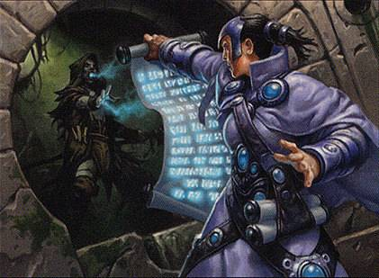

Magic: The Gathering Playtest Roleplaying Game
Introduction
For over 30 years, Magic: The Gathering has had a dedicated fanbase. What seems like a simple game is rich with variations and customizations that keep players engaged for a lifetime. Many fans also enjoy digital versions of the game.
Currently, Magic Arena is the primary way to play online, but before MTG Arena, there was MTGO, the Duels of the Planeswalkers series, and a well-known Microprose game. I have long wished for a modern version of the 1997 Magic: The Gathering game set in Shandalar, but since that seems unlikely, I've created a homebrew game: MTG: PRPG.
Magic: The Gathering, Playtest Roleplaying Game is a way to use MTG playtesting websites and software like Cockatrice, Xmage, Tappedout, and Manastack (my preferred site) to recreate the Shandalar experience, but with modern rules. Players start with one of 6 starter decks, then duel using their chosen software, earning in-game money and cards to improve their decks. After enough wins, they advance to more challenging formats with larger card pools.
Below you'll find more rules & random card generators. Choose your deck and have fun!
Rules
- Choose 1 of 6 starter decks as your base PRPG deck.
- When building a PRPG deck, your initial card inventory includes your starter deck, 30 of each basic land (including Wastes, excluding Snow Lands), and one of each ante card (excluding Contract from Below).
- PRPG decks consist of 60 Magic cards and a 15-card sideboard. No more than 4 copies of nonbasic cards are allowed in a deck.
- Matches are usually Best of 1 and use duel Magic: The Gathering rules. The official MTG rulebook can be found here.
- If you have a partner and your software supports multiplayer, you can play against them as long as you're on the same format tier.
- The format tiers are: Starter, Limited, Standard, Pioneer, Pauper, Modern, Legacy, and Vintage in that order.
- The Starter format includes cards from Portal Block, Starter 1999, and Global Series: Jiang Yanggu & Mu Yanling.
- The Limited format includes Standard-legal cards from the latest MTG block and the preceding block.
- All other formats follow rules, card pools, and banlists as described here.
- After creating your first PRPG deck, duel the other Starter format decks. After winning against each, you advance to the Limited format.
- In formats other than Starter, you compete against random decks in the chosen format, found on sites like TappedOut or MTGGoldfish.
- All matches in PRPG (excluding Starter format tier) are played for ante. After each player has finished taking mulligans, both players ante the top card of their libraries. The winner of the match recieves all cards in the ante pool.
- Winning a match earns you a PRPG booster pack with 5 commons, 2 uncommons, and 1 rare (12.5% chance of being a mythic rare).
- Booster packs contain cards currently legal in your format tier.
- A spreadsheet is highly recommended to keep track of your card collection and digital funds.
- Cards can be sold for in-game currency (digital USD) at the cheapest non-zero print price. Purchases are made at the most expensive print price, and only cards legal in your format tier can be bought. Mystery Booster cards can also be purchased (use at your own discretion).
- Whenever you win a match, you earn digital USD. Whenever you lose a match, you lose digital USD. Players start with $0.00.
- Starter format: $0.00 gain & $0.00 loss
- Limited: $1.00 gain & $0.50 loss
- Standard: $3.00 gain & $1.50 loss
- Pioneer: $5.00 gain & $2.50 loss
- Pauper: $7.00 gain & $3.50 loss
- Modern: $9.00 gain & $4.50 loss
- Legacy: $11.00 gain & $5.50 loss
- Vintage: $13.00 gain & $6.50 loss
- After you have won 5 consecutive matches in any non-Starter format, you may at any point choose to advance to the next tier. Once you advance, choose a legal deck in your new format tier. You gain all nonland mainboard cards from that deck into your cardpool. You may then choose to purchase the manabase of that deck and sideboard cards.
- Advancing to a new tier earns you a random premium card. Premium cards are powerful and cannot be sold.
- Owners of premium cards or cards from previous formats that are no longer legal can retain them in their inventory and use them in their PRPG decks.
- Winning 5 consecutive Vintage matches means victory in Magic: The Gathering Playtest RPG, after which players may start a new playthrough or showcase their deck.
- As PRPG is mainly a single-player system played for enjoyment, players are expected to self-regulate using the honor system.
- In the future, an EDH Campaign and Custom Creature Creator will be added to the game.